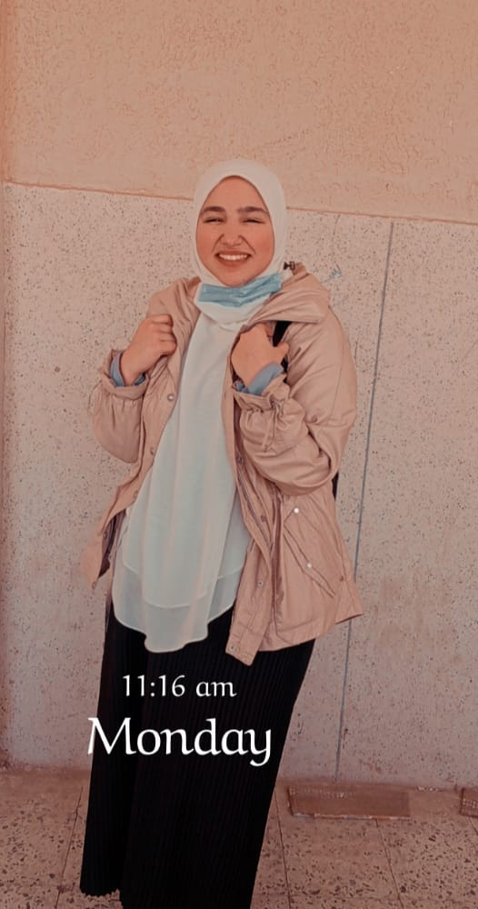

NAME: YASSMAIN ELBAYDAC
MY CV
عندي 16سنه و 7 شهور
من القاهره والجيزه
حافظه القران الكريم كاملا ومعايا ايجازه قران
بشتغل في المراكتنج من اربع سنين ومازلت بتعمق فيه اكتر
اشتغلت في كذا حاجة:
زكاة العلم- تيديكس -obm -مبادره نفسك -srs- مبادره she-
Belive your self -
FYA-PAMF-USAM-
s
Tedx Alex- Yosef7babe-
شركة الراية- وشركة Media&more - وشركةIMO مؤخرا